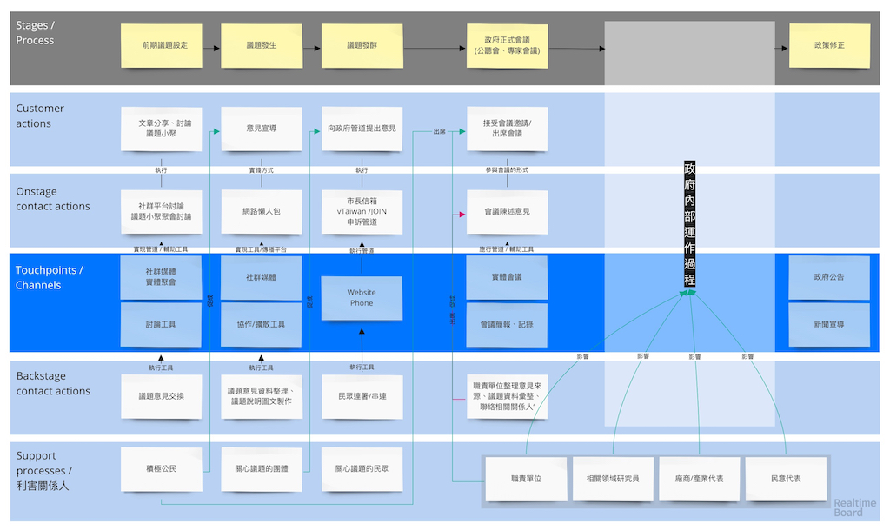

如何促進科技社群網路參與科技政策討論建議報告 - 以資訊科技社群為例 (草稿)
Table of Contents
List of Tables
- Table 1: 訪談對象及訪談形式
1 封面
2 中文摘要
3 英文摘要
4 前言
「所有公共論述都逐漸以娛樂形式來傳達。我們的政治、宗教、新聞、體育、教育和商業，全都成為娛樂業的附庸，對此民眾多半毫無怨言，甚至漠不關心。於是，我們成為瀕臨娛樂至死的一群。」
– 尼爾·波茲曼（Neil Postman）
// 這邊有很多玩意沒寫 「未來應加強推廣協作討論區的系統功能，或進一步導入新的協作方法，或建立新的誘因制度，以吸引民間社群（如公民科技社群）結合政府開放資料，或透過網路群眾協力（如群眾外包途徑）協助提案者釐清議題本質，進而提高民眾 提案品質。」廖洲棚、廖興中、黃心怡（2018）。 為此，貫穿本研究的核心問題是「 如何設計虛實整合的（crowd sourcing）討論機制使網路社群能在政策規劃初期對政策產生建設性意見 」。
Q: 數位工具真的能幫助收斂意見嗎？ A：看哪種目標… 如果只是要會議收斂討論的話是「facillator」，現階段不太有數位工具可以做到，但如果我們認為「參與」的最後結果是要能影響政策，這些大大小小的會議只是過程，真的能把碎片化意見收斂做出建設性意見的是「政策分析師」或是「幕僚」。 後面兩種人很需要工具幫忙做出議題裡面的論點與數據分析，只是現在資訊科技做不到。而就算是主持人好了，最後要整理好幾場分區會議的討論意見也是需要這樣的東西，但沒有「線上協作」概念做「參與」的 luddites 根本就不想嘗試這樣的數位工具，而有「知識者傲慢的」分析師或是政治菁英不會覺得 「民眾」可以給出什麼建設性的意見。 這中間分析師還要分做「量化分析」跟「質化分析」的，互相還會看不起對方。 再來逐字稿、資料是「資本」，「crowd sourcing」跟「協作」不存在在於他們的想像。
Q：網路真的適合做議題釐清嗎？ A：看你說哪個網路，internet？www？還是 social network software？ 要知道以前大家打開 kimo.com 就認為是連上網路。 如果說的是 social network software 他本來就不適合，它存在的初衷就不是要讓你做「公共論述」。但這現象也不是什麼新鮮事。 尼爾·波茲曼之前就講過「所有公共論述都逐漸以娛樂形式來傳達我們的政治、宗教、新聞、體育、教育和商業，全都成為娛樂業的附庸，對此民眾多半毫無怨言，甚至漠不關心。於是，我們成為瀕臨娛樂至死的一群。」
Q：社會問題不可能只靠數位工具解決。 A：只用「科技決定論」跟「反科技決定論」這兩個立場來討論都只是把問題給簡化討論。
5 研究目的
依據上述背景與核心問題，本研究目的分為兩個層面，簡述如下:
- 促使民眾自組織議題社群增加議事資本。
- 設計一套適用網路原生代非同步的網路討論方式提升議題討論的品質與參與政策過程的深入程度。
6 研究方法
6.1 調查訪談法
訪談法透過與受訪者面對面之交流，獲取內容訊息的分析方法，特別是針對受訪者親身經驗之故事特別有用。 本研究主要透過訪談回顧歷年網路公民參與機制的設計與困難，部分受訪者選擇匿名不公開。 訪綱見附錄。
| 代號 | 分類 | 訪談時間 | 形式 |
|---|---|---|---|
| NPC1 | 社群專家 | 2017/12/21 7:30-9:30pm | 訪談 |
| NPC2 | 社群專家 | 2018/01/12 10:00-12:00am | 訪談 |
| NPC3 | 社群專家 | 2018/01/12 2:00-3:30pm | 訪談 |
| NPC4 | 社群專家 | 2018/01/16 2:00-4:00pm | 訪談 |
| NPC5 | 社群專家 | 2018/01/31 2:00-4:00pm | 非正式閒聊 |
| NPC6 | 智庫研究員 | 2018/02/09 2:00-4:00am | 訪談 |
| NPC7 | 私部門分析師 | 2018/03/01 4:00-5:00pm | 訪談 |
| NPC8 | 智庫研究員 | 2018/03/28 7:00-9:00pm | 使用者測試 |
| NPC9 | 服務設計師 | 2018/03/29 3:30-5:30pm | 使用者測試 |
| NPC10 | 首長幕僚 | 2018/04/02 7:30-9:30pm | 訪談、使用者測試 |
| NPC11 | 智庫研究員 | 2018/04/03 2:00-4:00pm | 訪談、使用者測試 |
| NPC12 | 社群專家、倡議者 | 2018/05/31 11:00-12:00pm | 訪談、使用者測試 |
| NPC13 | NPO 主任 | 2018/07/19 11:00-12:00pm | 訪談、使用者測試 |
6.2 服務藍圖法
6.3 使用者旅程法
300 字方法簡介
6.4 設計敏捷方法
設計敏捷方法 （Design Sprint Method）是由 Google 提出並且於內部實踐受到歡迎。概念基礎來自於敏捷開發（Agile）、設計思考（Design Thinking）與革新遊戲法（Gamestorming）。讓團隊在五天內定義關鍵問題和目標、大量發想產品解法、決定發展方向、做出原型、使用者測試。 本研究使用這個方法探索「科技政策如何在前期規劃納入更多民間專家的建設性意見」的可能性方案。詳見 The Sprint Book 1。
7 文獻檢閱
7.1 現有網路參與機制回顧
7.2 政策討論參與途徑分析

Figure 1: 服務藍圖 （本研究製圖）
// 使用者旅程
8 參與機制
- 數位原民參與手冊
- 議題小聚
- 期望參與者對話流程

- 會前流程
- 設定討論議題
科技人表面上往往對政策冷感不關心，但實際上是缺乏暸解而認為不需要知道。環境、民生、交通、經濟課題是貼近生活的比較容易被暸解並喚起共鳴。
操作上選定都會區，找尋在地活躍技術社群，加入他們並暸解他們所關心的議題及技術，參與討論並主動分享科技政策新知與新聞。找到核心討論目標，選定關心議題，排定時間以協辦的角色加入。
- 尋找合作社群
想第一手接觸各縣市的科技人，透過在地活躍的技術社群會是最簡便的方式。科技圈因為技術不斷的演化及進步，需要時時更新科技新知及知識背景與深度，往往會以一種類讀書會的形式聚集在一起，將零碎的時間組織起來透過分享學習的方法來克服軟體技術迭代速度。透過社交軟體，如 facebook slack telegram blog 這類的軟體找尋合作的當地社群 ，口碑、與過往的聚會記錄都是可以互相暸解的方法。選定後實際參與聚會可以更加暸解活動屬性，加上與主持人深度交談交換辦活動的概念與想法。之後就是敲定舉辦小聚的時間，一般建議一場 3 個小時為主，時間以周六或平日晚上。 並保持 2 周以上的宣傳時間。
- 設定討論議題
- 會中流程
擬定宣傳稿並發起 facebook 活動頁作為宣傳。內文範本如下：
- 活動文宣範本
【你不關心政策，政策將遠離你】
到底要怎麼做，政府才會聽科技社群的意見？帶著你關心的議題一起來行動！在政策搞到我們之前，有沒有機會提早把聲音送進政府，讓政策制定跟得上時代。
如果把自由軟體圈習慣的開放協作流程應用到科技政策規劃，是否能讓政策能更容易迭代學習，更貼近民間真實的需求？
【想要參與政策，如何開始實作】
議題釐清小聚透過協同討論找出議題問題點、相關政策、法規，切入問題核心。透過組織思維把論述拉到可以跟政府對接的程度，才能提出政府會買單的提案。
這一套組織心智思維與資料的方式，同樣適合用於創業、專案規劃、設計與行銷推廣等面向。
在本活動中，將會使用到 Sense.tw 團隊所開發的 Sense Map 套件，進行議題討論與結果歸納整理，對於有興趣在團隊中導入議題協同討論工具的朋友，歡迎參加。
- 活動當天
提早一個小時到現場佈置及測試活動設備，架設活動立牌、測試投影機、安排座位及入口動線、名片 e-mail 投放箱
【活動議程】
- 開場 (10 分鐘)
- sensen.tw 組織介紹 (5mins)
- 活動目的介紹 (5mins)
- 規則介紹 (20 分鐘)
- 四色便條紙用途介紹
- 發言權杖使用
- 選擇反方扮演人
- 求資料來源
- 時間控場
- 與會者自我介紹
- 活動開始 (120 分鐘)
- 提問
- 問題回覆
- 補充資料
- 列舉利害人關係
- 結束 (30 分鐘)
- 各組小結
- 介紹 vTaiwan，join, sesen.tw map
主持人開場與介紹儘量簡短，並快速的說明便利貼顏色規則。
資料輸入種類 顏色 問題 紅色 解法與回答 藍色 補充資訊 綠色 利害關係人 黃色 活動大部份的時間留給與會者自我介紹及討論。自我介紹每人 30 秒，以三個標籤用以說明描述個體，例如：
- 網路前端工程師
- 自由軟體推廣者
- 關心綠色能源
用便利貼製作名牌，放在桌前，用為交流及稱呼使用。主持人開始拋出問題，視情況請與會者發言。活動進行到中途適時加入「利害關係人」透過反方立場觀察問題的角度的不同，來深掘問題核心建立論述強度與角度。補充資料會讓想法變論點，論點變論述。透過大量佐証資料而非以一堆「我認為」、「我想」、「我猜」、應該」等這類不客觀， 流於情緒、謠言與假設性言論。當問題或解法被提出，要求佐証資料上網 google 即時紀錄查實，這個動作會大大影響發言品質，因為言論經過思考記綠核實的關係而變得更好。
公民教育往往較不重視以致於大眾普偏對開會、討論、公開辨論、與發表意見等都缺乏方法與技巧。議題小聚工作坊的流程就相當重要，人數的多寡，決定了發言規則的選定。即時紀錄是關鍵，有紀錄才能閱讀與思考，語言可以快速溝通但記憶只有 20mins 就會被其意見擠出大腦思考列上。圖像式的記憶又比文字來的有效。Map 類將文字與文字的建立關聯網路也比條列式的文字來的有效用。資料輸入預先以顏色作為分類，資料可快速分類過濾。
議題小聚每次約三個小時，第一次的操作往往只能達到 well inform，而第二三次的操作透過閱讀地圖與記錄，可快速的彌補資訊落差。但之後又會因為資訊量大，而只會有少數人可以理解的人會持續關心相關議題。
- 開場 (10 分鐘)
- 活動文宣範本
- 會後流程
收集與會者名片或 e-mail，用 map 整理會議記錄，並主動邀請參與者參加線下討論，會後發佈當天討論的結論，並在三天內發送會議記錄， 將與會者加入 mailing list 討論串內，發佈當天活動 blog 記錄。籌劃下次的活動，並延續當天討論的內容發展，進行下一次的循環。
- 設備需求與人員配置
設備需強烈建議需要網路查資料，需要可以共享畫面的投影機或電視。人員配置建議需要三以上，列表清單如下。
- 設備需求
- 20 人左右的場地
- 投影機或電視
- 無線網路
- 四色便利貼，白色壁報紙
- 簽字筆數隻
- 名片收集箱
- 錄音設備，拍照設備
- 工作人員配置
- 主持人
- 反方角色扮演者
- 會議紀錄者，用 hackmd 或用 sensemap 記錄
- 設備需求
- 應用場景
議題小聚的應用場景建議以數位原員為主體，配合在地社群合辦，解決場地與會眾問題。討論主題貼近與會者生活要能引起共鳴。以下以「人事時地物」 五個面向來說明。
面向 說明 人 建議對像為科技從業人員或是高中或大專學生 事 以貼近生活或環境相關主題，例如網路與物聯網 時 建議周間 19:00~22:00 或六日下午 14:00~17:00 以三個小時為單位 地 舉辦地點建議在市中心，交通便利的場所，與當地社群合辦 物 請參考上一章節 - 設備需求與人員配置
- 期望參與者對話流程
- 意見整理工具
// 大概內容比較強調的議題相關的資料跟資料之間的關係，在不同的「statements」找出可以連貫所有「statements」的方式，以及將相關的「statemetns」從空間上 grouping 起來。 呈現同一件事情的不同面向，強調 diverse perspective 與以及對 stakeholder 的影響。 讓公共討論可以變成「不特定公眾可以利用休閒時間檢視評估議題裡面的問題跟可能解法及佐證依據，時間可以是長達好幾個月。 把每個人都當成「政策評估人員」看待，或是每個 community 預設總有幾個「積極公民」會去吵政策的優缺點。 不加「fact」，「evidence」的原因是因為每個人認定的事實很多種。「社會真實」分為「客觀真實」、「媒介真實」、「主觀真實」。實際上我們討論事情都是依據在「媒介真實」跟「主觀真實」上。所以「證據」就是去以「資訊來源」做佐證。 QA 是最簡單不用教的介面，但是 QA 如果是 unstructured interface，對於新手仍然是困難的！question asking 仍然是個困難的 task 想做 self-assessment, formative assessment.簡單的說就是一連串“評估的檢視” diagnostic testing, 會包含 feedback, peer-review, question…etc. 也是可以透過一些 rubric 或是 guiding question 去引導新手做自我評估 “self-assessment” or “self-feedback”, 但是問題又會出在新手根本無法做“深度反思“，因為能力不足所以小聚裡面指定一人「唱反調」。reflection level 會對應到 “問題的深度“，也會對應到一個人對於概念的“理解程度” 主要是透過 QA 互動的方式去做 crowd sourcing problems, possible solutions 以及 摘要主要是透過 QA 互動的方式去做 crowd sourcing problems, possible solutions 以及 摘要分享幾篇我很愛的 paper：今年 CSCW best paper (CS 裡 HCI 的 top conference)：利用 collaborative tagging and summarization 去做 group chat 的 sensemaking http://people.csail.mit.edu/axz/papers/cscw_tilda.pdf https://d.ucsd.edu/srk/papers/2017/GutInstinct-CHI2017.pdf 這篇是 crowdsourcing questions，雖然是在 crowdsource scientific question，但是此篇目的在於如何 guide non-expert to generate novel questions and collaboratively perform scientific work 製造衝突則可以透過調整參與者的多元性來處理，讓人意識到他的解法可能是別人的問題，去反思問題背後的問題
- 回應論證建構模型
9 結論與建議
本章依據前述研究成果進行研究發現綜整，並依據相關研究發現，提供若干建議供政府部門參考。

9.2 建議
10 參考文獻
- 廖洲棚、廖興中、黃心怡（2018）。開放政府服務策略研析調查： 政府資料開放應用模式評估與民眾參與公共政策意願調查。受委託單位：電子治理研究中心。國家發展委員會編印。NDC-MIS-106-003。
11 附錄
11.1 議題層次訪談大綱
11.2 議題釐清工具相關開發資訊
- 工程設計文件
[TOC]
- Major components
In terms of production deployment, there are the following components in Sense.tw:
- Sensemap frontend
- Web clipper
- Sensemap backend
- SMO tool
- Architectural picture
digraph architecture { nodesep=1.0 node[shape=box] edge[style=dashed] subgraph clusterB { label="Backend" labelloc="b" GraphQL Hypothesis OAuth } Frontend->GraphQL,OAuth WebClipper->Hypothesis,OAuth SMOTool->GraphQL GraphQL->Database OAuth->Database Hypothesis->Database Hypothesis->Redis }Figure 5: Overall architecture
Note: Consult Yen-Wen Chen for production Redis deployment.
- SMO tool
SMO tool serves a vaild XML documents with Open Graph protocol information for social media optimization purposes.
The endpoint of SMO tool accepts exactly the same URL path as the Sensemap frontend. It is the responsibility of cloud deployment to redirect traffics from social media bots to this endpoint.
SMO tool requests data from the GraphQL endpoint of Sensemap backend to build the XML outputs.
- Sensemap frontend
Sensemap frontend serves the user-facing Sense.tw interface.
Sensemap frontend communicates with the GraphQL endpoint of backend. It also directs users to the OAuth endpoint for user sign up and login.
- Web clipper
Web clipper provides the sidebar for annotations when user is browsing a 3rd-party web page.
Web clipper serves the sidebar with the Via proxy service: for users wishing to visit a web page with URL http://some_url, they will direct the browser to https://via.sense.tw/SOME_URL to receive the same web page through the Via proxy. Via proxy inserts JavaScript code for the annotation sidebar, and also replaces all the links in the web page with the ones with Via proxy prefix.
The inserted code communicates with the Hypothesis endpoint of Sensemap backend. It also communicates with the OAuth endpoint for user sign up and login.
- Loading annotation sidebar
The loading of annotation sidebar is somewhat convoluted and is explained here for the lack of a specific location for its documentation currently.
There are two pieces of code served by the Hypothesis endpoint of backend to provide annotation sidebar:
- The boot code for bundled JavaScript for the sidebar located at https://api.sense.tw/client/boot.js.
- The HTML document for the sidebar located at https://api.sense.tw/app.html.
When Via proxy loads a web page, it inserts the boot code as an embedded script into the web page, along with other code used by the proxy. It appears that some of this code injects an IFRAME into the web page which loads the HTML document for the sidebar.
The HTML document at
app.htmlcontains information about the location of the boot code, which is configured by theCLIENT_URLenvironment variable at the backend. Likewise, the boot code atboot.jscontains information about the location of the HTML document, which is configured by theSIDEBAR_APP_URLenvironment variable when bundling the client.
- Loading annotation sidebar
- Endpoints of Sensemap backend
The GraphQL endpoint resides at https://api.sense.tw/graphql.
The Hypothesis endpoint includes the REST API endpoint at https://api.sense.tw/h/api, the HTML of sidebar at https://api.sense.tw/app.html, and JavaScript of sidebar at https://api.sense.tw/client/boot.js.
The OAuth endpoint includes:
- The login form at https://api.sense.tw/login
- The signup form at https://api.sense.tw/signup
- The logout path at https://api.sense.tw/logout
- The OAuth endpoint at https://api.sense.tw/oauth/authorize for authorization grant, and at https://api.sense.tw/h/token for access token.
All of these endpoints request data from the database. OAuth endpoint also uses Redis service for session management in the login forms.
- Data storage and caching
Note: Consult Yen-Wen Chen for production data storage and caching.
- Load balancing
Note: Consult Yen-Wen Chen for production load balancing.
- Roadmap for real-time collaborative editing
The Sensemap frontend and backend application were designed with future plan towards real-time collaborative editing in mind.
digraph architecture { nodesep=1.0 node[shape=box] edge[style=dashed] Frontend->Queue GraphQL->Frontend subgraph clusterB { label="Backend" labelloc="b" GraphQL Queue->TransactionRunner } TransactionRunner->Database Database->GraphQL }Figure 6: Real-time architecture plan
Briefly, it is expected in this plan that manipulations to the application state is done by creating and running transactions:
- Frontend would create transactions according to user input, and submit them to the queue at the backend.
- Backend would run transactions in the queue to update database.
- The updated application state would be pushed to frontend by GraphQL subscription and query.
- The transactions would be designed to allow conflict-free replication among all clients.
- Major components
- 源碼庫
- 前後端源碼: https://github.com/SenseTW/sensetw
- Annotation-Enabled web proxy: https://github.com/SenseTW/via
- 開發環境: https://github.com/SenseTW/devenv
11.3 民眾語彙腳本
- 對公部門介紹何為網路社群應如何比喻
透過宗教信仰的比喻，對較少數位協作經驗、沒有社群經驗的的人員建構對網路社群的想像。
- 語彙轉譯表
轉譯前 轉譯後 如何找出一個網路社群常用來討論的數位工具在哪？ 廟在哪裡? 如何判斷出一個網路社群存在？ 廟有很多信徒嗎? 如何算出一個網路社群的大小？ 廟的香爐有多厚? 如何找出誰是這個網路社群的專家？ 廟裡有幾尊神? 如何找出網路社群專家對一個議題有幫助？ 要拜哪一尊神才會靈? 要問幾次才能問到真正能給建議的專家? 要去過多少間廟才找得到會靈的神? 如何找出這個網路社群的黑話？ 要在廟裏怎樣講比較不被人當成小白? 如何找出網路社群跟網路社群之間的關係，怎麼接觸一個網路社群不會得罪另一個社群？ 進香路線規劃 如何在網路社群號召做某件事會有人跟隨？ 怎麼在廟裡變成神? 如何衍伸相關社群？ 怎麼分靈? 如何增加網路社群的凝聚感？ 如何讓信眾聚在一起增加感情? 如何成立一個網路社群？ 怎麼蓋一間廟? 怎麼讓一個網路社群變大？ 怎麼增加信徒? 怎麼不一個網路社群崩壞？ 怎麼不會有妙天? 如何判斷一個數位工具有沒有產生社群？ 這間廟有沒有管理委員會? 要花多久才會知道一個網路社群的專家不是專家？ 要多久信徒才會對神失去信仰
- 語彙轉譯表
- 對網路社群介紹科技會報跟科技部的不同
- 對網路社群介紹行政部門如何分類議題的層次
每個層級的長官關心的議題大小不同，以政務委員為例，頂多看到第二級。
層次 關心議題的動機 長官 第一級 這議題會影響到臺灣嗎？ 哪些部會要出來負責 ？ 院長/政委 第二級 部會針對議題的解法是什麼？ 部長/主委 第三級 解法裡面的子解法是什麼 局處司